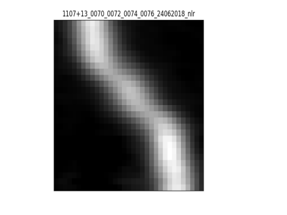
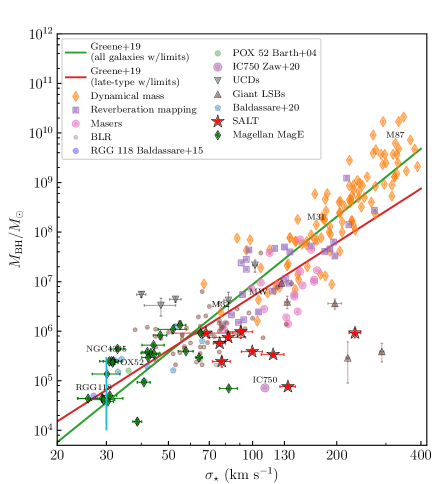

Vladimir Goradzhanov, Igor Chilingaryan, Ivan Katkov,
Kirill Grishin, Victoria Toptun, Ivan Kuzmin, Mariia Demianenko
11institutetext: Sternberg Astronomical Institute, M.V.Lomonosov Moscow State University,
22institutetext: Center for Astrophysics – Harvard and Smithsonian (USA),
33institutetext: Department of Physics, M.V. Lomonosov Moscow State University,
44institutetext: New York University Abu Dhabi (UAE),
55institutetext: Center for Astro, Particle, and Planetary Physics, NYU AD (UAE)
66institutetext: Moscow Institute of Physics and Technology (National Research University),
77institutetext: HSE University
أرصاد طيفية بصرية للثقوب السوداء متوسطة الكتلة ومجراتها المضيفة: علاقة .
الملخص
تُعد الثقوب السوداء متوسطة الكتلة (IMBHs؛ ) في مراكز المجرات أساسية لرسم صورة متماسكة عن تشكل الثقوب السوداء فائقة الكتلة (SMBHs) ونموها. وباستخدام تحليل البيانات الضخمة، حددنا 305 مرشحًا لـ IMBH و1623 مرشحًا لثقوب سوداء فائقة الكتلة منخفضة الكتلة نسبيًا (). ولعدد 35 من المجرات المضيفة من هذه العينة المجمعة ذات النوى المجرية النشطة (AGN) المؤكدة بالأشعة السينية، جمعنا وحللنا أرصادًا طيفية بصرية. وتبين هذه البيانات أن تشتتات السرعات النجمية في الانتفاخات () تقع في المجال 24118 km/s ولا تتبع الارتباط مع الذي أرسته الثقوب السوداء فائقة الكتلة الأكبر، مما يشير إلى أن التراكم في مجال هو قناة النمو السائدة للثقوب السوداء.
keywords:
علم الكونيات: أرصاد — الكون المبكر — المجرات: نشطة — المجرات: نوى — المجرات: سيفرت — الكوازارات: الثقوب السوداء فائقة الكتلة1 مقدمة
تُصنَّف الثقوب السوداء المرصودة حاليًا بحسب الكتلة إلى ثلاثة أنواع: ثقوب سوداء ذات كتل نجمية ()، وثقوب سوداء فائقة الكتلة (SMBH؛ )، وثقوب سوداء متوسطة الكتلة (IMBH؛ ). وما يزال نمو الثقوب السوداء فائقة الكتلة المركزية وطريقة تأثيرها في مجراتها المضيفة مسألة شديدة الجدل في الفيزياء الفلكية الحديثة. ومن منظور نظري، لا تستطيع بذرة ثقب أسود ذات كتلة ابتدائية قدرها أن تنمو إلى ثقب أسود فائق الكتلة تبلغ كتلته مليار كتلة شمسية عبر التراكم خلال 1 Gyr (أو المقابلة للكوازارات ذات الانزياح الأحمر العالي صاحبة الرقم القياسي)، لأن معدل التراكم محدود بسطوع إدنغتون (). فإذا كانت هذه بالفعل القناة الرئيسة لنمو الثقوب السوداء فائقة الكتلة، فإن البذور «ناقصة النمو» ستكوّن جمهرة من IMBHs.
نعتمد هنا الحد بوصفه كتلة العتبة لما نسميه IMBH، لأنه يقابل مقدار عدم يقين منهجي قدره +1 في تقدير الكتلة الفيريالية (reines13; Chilingarian+18) من الخط العريض .
تتبع الثقوب السوداء المركزية الضخمة في المجرات ذات النوى النشطة وغير النشطة على حد سواء ارتباطات وثيقة نسبيًا مع تشتت السرعات النجمية للانتفاخ ومع الكتلة النجمية الكلية للانتفاخ (FM00; vandenBosch16)، وهو ما يُفسَّر بوصفه تطورًا مشتركًا للانتفاخ والثقب الأسود فائق الكتلة عبر اندماجات المجرات. وفي الوقت نفسه، يمكن للثقوب السوداء فائقة الكتلة أن تكتسب كتلة عبر التراكم (2012Sci...337..544V) في أي لحظة من الزمن الكوني. ولم يُعرف بعد على نحو كامل ما إذا كانت هذه العلاقات تنطبق على IMBH بسبب الصعوبات الرصدية وصغر عينات IMBHs المعروفة.
في 2018، حدد Chilingarian+18 أكبر عينة حتى ذلك الحين تضم 305 مرشحًا لـ IMBH باستخدام التنقيب في البيانات ضمن قاعدة بيانات Reference Catalog of Spectral Energy Distribution (RCSED)، التي تحتوي على ما يقرب من 1 مليون طيف للمجرات من SDSS Survey (SDSS_DR7). ورُصد بعض هذه الأجرام لاحقًا بمطيافات بصرية متوسطة الاستبانة MagE (تلسكوب Magellan بقطر 6.5-m) وRSS (Southern African Large Telescope بقطر 10-m) لتنقيح تشتتات السرعات النجمية وتحسين قياسات . ونعرض هنا النتائج الأولية لهذا المشروع، كما نقدم قياسات لعينة من الثقوب السوداء فائقة الكتلة منخفضة الكتلة نسبيًا () التي تشغل الجزء السفلي من علاقة .
2 تحليل البيانات الطيفية
 |
|

حصلنا على 30 أطياف لـ 26 من الثقوب السوداء فائقة الكتلة منخفضة الكتلة نسبيًا باستخدام MagE، وعلى 9 أطياف إضافية باستخدام RSS، واختزلناها بسلاسل معالجة البيانات القياسية. ولاءمنا الأطياف المختزلة بتقنية NBursts (CPSA07; CPSK07) لتحديد المتصل النجمي وقياس تشتتات السرعات النجمية حتى قيم منخفضة قدرها 20 km/s (2020PASP..132f4503C). ثم طرحنا قوالب التجمعات النجمية الأفضل ملاءمة من الأطياف وطبقنا طريقة جديدة لإعادة بناء لامعلمية ثنائية الأبعاد لملف في أطياف الانبعاث (انظر الشكل 1). وتعطي الطريقة ملفًا لامعلميًا للخطوط الضيقة يبرز خطوطًا ضيقة صادرة عن AGN، ومخطط موضع–سرعة للخطوط الضيقة المنبثقة من قرص مكوّن للنجوم في المجرة المضيفة. كما تعيد معاملات المكوّن العريض لكل من و المتشكلين في منطقة الخطوط العريضة، إلى جانب الفيوض المقابلة. ثم يُستخدم فيض العريض وعرضه لتقدير فيرياليًا باستخدام المعايرة من reines13: . واستبعدنا 7 مجرات من عينة MagE حيث لم تُكتشف المكونات العريضة بثقة. كما أخذنا في الحسبان فواقد الشق، بافتراض أن المكوّن العريض H يأتي من مصدر نقطي ومعرفة عرض الشق.
3 علاقة التحجيمية
علاقة المبنية من القيم المقيسة لكل من و، والمستمدة من بيانات MagE وSALT، موضحة في الشكل 2. ويمكننا استخلاص نتيجة أولية مفادها أن الثقوب السوداء فائقة الكتلة منخفضة الكتلة نسبيًا وIMBHs لا تتبع العلاقة التي أرستها الثقوب السوداء فائقة الكتلة الأكبر، ومن ثم فهي لا تتطور تطورًا مشتركًا مع انتفاخات مجراتها المضيفة. ويمكن أن تنشأ مثل هذه الحالة إذا كان نمو كتلة الثقب الأسود في نطاق الكتل المنخفضة تهيمن عليه عملية التراكم لا الاندماجات. وقد تترتب على هذه النتيجة آثار مهمة في قابلية كشف إشارات الموجات الثقالية الصادرة عن اندماج IMBHs بواسطة مهمة LISA المقبلة. شكر وتقدير. يدعم هذا المشروع منحة RScF رقم 17-72-20119.